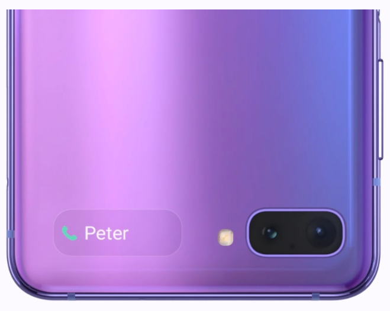

Un écran géant qui se glisse
dans votre poche
Ouvrez le Galaxy Z Flip pour vivre une immersion saisissante.
Son écran de 6,7'' Infinity Flex aux fines bordures
vous plonge littéralement dans l'image.
L'appareil photo est subtilement intégré dans l'écran
qui est également conçu pour réduire l’émission
de lumière bleue et donc réduire votre
fatigue oculaire.
Plier du verre est
maintenant possible
Samsung repousse les limites de
l'innovation en réussissant à plier du verre
sur un Galaxy. Équipé d'un verre ultra fin
à technologie propriétaire, le Galaxy Z Flip
est le seul smartphone pliable qui propose
le confort d'un écran en verre.
Prêt pour la nuit
L’appareil photo du Galaxy Z Flip
est puissant même la nuit.
Des secondes de prises de vue à longue
exposition sont transformées en œuvre
d’art vidéo avec des traînées lumineuses.
Et lorsque vous pliez le téléphone,
il peut faire office de trépied.
Utilisez Night Hyperlapse pour découvrir
un nouveau type de prise de vue nocturne.

L’essentiel en un clin d’œil
Vos notifications s'affichent clairement sur
l'écran de façade. Appuyez dessus,
et grâce à l'App Continuity, l'application s'affiche
devant vous en toute fluidité lorsque
vous dépliez le Galaxy Z Flip.

256 Go
8 Go
le Galaxy Flip ne prend pas
en charge un emplacement pour
carte SD externe.